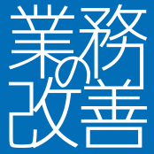

ホームページをリニューアルしています
「IT会社のサイト」ではなく、なぜこの仕事をしているのかを伝えるサイトへ。少しずつ作り直しています。

「なんとかしたい」と思いながらも、
なかなか前に進めない日が続いていませんか。
問題は、頑張りが足りないのではなく——
仕組みが、合っていないことがほとんどです。
なぜ、この仕事をしているのか
これまで多くの現場に関わってきました。一生懸命に取り組んでいるのに、なぜかうまくいかない。そういう場面を、何度も目の当たりにしてきました。
気づいたのは、うまくいかない理由のほとんどが「人の問題」ではなかったということです。流れが少し詰まっていたり、仕組みが噛み合っていなかったり、伝わるべきことが伝わっていなかったり。
そういう場所を少し整えるだけで、人は自然に動き始める。チームが前に進み始める。そういう変化を、何度も見てきました。
流れが整えば、人は自然と前へ進めます。
だから私は、ITそのものを売りたいわけではありません。現場が本来の価値を発揮できる状態を作ること。そのために、時にはシステムを作り、時には整理を行い、時には壁打ちをしながら、一緒に前へ進める形を模索しています。
山田 建太郎
株式会社 業務の改善 代表取締役
こんな場面、ありませんか
どれかひとつでも思い当たることがあれば、
きっと一緒に整理できます。
システムを入れたのに、現場がかえって忙しくなった。——そんな経験、ありませんか。
改善したいのに、どこから手をつければいいかわからない。——そういう状態でも相談できます。
IT会社と話しても、なんかかみ合わない、伝わらない。——それ、会話の構造の問題かもしれません。
できる人に集中しすぎて、その人が倒れたら機能しない。——いまのうちに整理できます。
忙しすぎて、改善のことを考える余裕すらない。——それが一番危ないサインです。
DXとか言われても、うちには大げさすぎる気がする。——小さく始められます。
少し整えるだけで、前に進める場合がほとんどです。
まずは、一緒に現状を整理することから始めましょう。
だから、こういう形で支援しています
状況や課題に合わせて、最適な関わり方を選べます。
「どれがいいかわからない」場合は、まず相談から始めましょう。
月額 / スポット
「こんなこと聞いていいの？」というレベルの相談から。IT全般の壁打ち相手として、気軽に使ってください。
3ヶ月〜 / 月額
課題整理から小規模PoCの実施、検証、定着まで。一緒に走りながら、現場に合った改善を積み上げます。
プロジェクト単位
PoCで効果を確認できたら、本格的なシステム開発へ。信頼できる開発パートナーと連携し、質の高い開発を実現します。
進め方
最初の一歩は「ヒアリング」から。
整理されていなくても、「なんかうまくいっていない」だけでも大丈夫です。
整理されていなくてOK。まず話を聞きます。
業務フローや課題を一緒に可視化します。
症状ではなく根本原因を探ります。
やってみる価値があるかを数字で考えます。
まず小さく試します。大きな投資は後で。
現場で使えるか、効果が出るかを確認します。
効果が確認できた場合のみ、スケールを検討。
現場になじむまで、そばにいます。
整理されていなくてOK。まず話を聞きます。
業務フローや課題を一緒に可視化します。
症状ではなく根本原因を探ります。
やってみる価値があるかを数字で考えます。
まず小さく試します。大きな投資は後で。
現場で使えるか、効果が出るかを確認します。
効果が確認できた場合のみ、スケールを検討。
現場になじむまで、そばにいます。
よくある質問
News & Stories
考えていること、起きていること、小さな変化を、少しずつ書いています。

「IT会社のサイト」ではなく、なぜこの仕事をしているのかを伝えるサイトへ。少しずつ作り直しています。
準備中です。
準備中です。
お問い合わせ
そのくらいの気持ちで、声をかけてください。
整理できていなくても、何から話せばいいかわからなくても、大丈夫です。
送信しました。ありがとうございます。
3営業日以内にご連絡いたします。